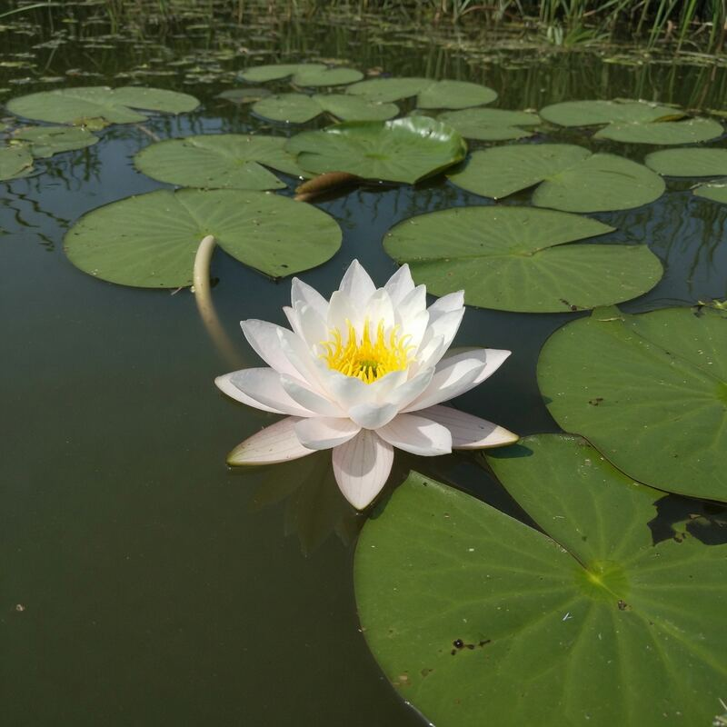

生命5–11 岁本地观察
荷花观察站
荷叶「出淤泥而不染」，靠的是叶面乳突加一层蜡：水摊不开，只好抱成珠，泥点粘在珠面上，珠一滚就被带走。这是界面后果，不是品格考试，也不是叶子在擦。同一滴水落到纸巾上立刻摊开被吸走，才看得出差在亲水还是疏水。本页练「珠化带走泥」和「纤维喝水」。不撕活叶，池边慢走；看珠用落叶或模型就够。台上数字只比较珠不珠化，不是某一种荷的说明书。
这一片更像荷叶吗


点一张图鉴，看它更像水珠会滚的荷叶，还是睡莲或毛巾。再点另一张来比较。
荷叶自洁台 · 真参数
调蜡突密度与叶面倾角。蜡突越密、叶子越斜，水珠越圆，泥越容易跟着滚走。
乳突加蜡，水成珠、泥跟着滚。拖滑杆看珠能不能走。
先猜一猜，再拖滑杆
第 1 题：蜡突够、倾角够（蜡突 24、倾角 10），自洁会更明显吗？
先押一个，再拖到 蜡突密度 24、叶面倾角 10。
第 2 题：蜡突 4、倾角 3，还会滚吗？
押好后拖到 蜡突密度 4、叶面倾角 3。
第 3 题：蜡突最少 3、倾角最弱 2。还能明显会滚吗？
押好后蜡突 3、倾角 2。
荷花图鉴
下面有 12 张卡。点两张不一样的，再说谁更像荷叶这种「蜡突让水成珠、把泥带走」的叶子。肥皂水不是荷叶。
还没选。先点一张，再点另一张，比谁更像荷叶。
猜一猜
荷叶上的水为什么缩成珠子往下滚？
先押一个，再点「看答案」。
任务：比谁更像荷叶
点两张不同的图鉴，再说出谁更像荷叶这种蜡突让水成珠、把泥带走的叶子。肥皂水不是荷叶，请换蜡突、水珠或荷叶来比。
开放式提示不会代替上面的正式任务。
尚未完成：先点两张卡，再说谁更像荷叶。
乳突加蜡，水成珠、泥跟着滚；不是品格课
先点「蜡突」和「水珠」，看水是摊开还是抱成球。再点「毛巾」：纤维把水吸进去，不是滚走。自洁台只改蜡突密度和叶面倾角，用来比较珠会不会滚、泥跟不跟。
乳突把接触面抬成点阵，蜡让水更愿意抱自己，水和叶之间还隔着一层气。泥粒粘在珠面上，珠一滚就带走。这是界面后果，不是「荷叶很高尚所以不沾泥」，也不是叶子在擦。
读数「自洁≈蜡突×倾角÷12」是本页比较尺子：自洁≥8 水珠更圆滚，不是真实接触角。普通纸会吸摊。因为气腔在活株叶柄里，撕叶等于切断根的气管，所以不撕活叶，池边慢走。
水抱成珠再滚，泥跟着走；不是荷叶很高尚
先找珠化：水是摊开还是抱成球，再看尘粒是否跟着走。对照纸巾：同一滴水立刻摊开被吸走。对照毛巾：纤维把水喝进去，不是滚走。
完成句请写「乳突加蜡，水成珠、泥跟着滚」或「同一滴到纸巾上会摊开」，不要写「荷叶很干净所以高尚」。出淤泥不染是结构，不是道德象征课。
接触角大，水不敢摊成膜，只好自己抱成球。这不是叶子在擦，也不是品格。
水和叶子真正贴着的只有小丘的顶点，中间隔着气，珠才站得住、滚得走。
蜡让水更愿意抱自己，乳突和蜡要一起才够，缺一样珠化就会弱，两件缺一不可。
自洁靠珠子滚走尘土，不是「出淤泥不染」那句品德口号，也不是叶子在擦桌子。
叶柄里的气腔把空气送到水下根区，和叶面疏水是另一条账，不要混成一句。
用模型或已经落下的叶看珠，不要撕池里还活着的叶子，池边慢走，落叶就够。
- 滴一滴。珠还是摊。
- 加干尘。尘在珠上还是在叶面上。
- 轻倾。珠走时尘跟不跟。
- 换纸巾。同一滴立刻拆穿亲水。
荷叶上的水会抱成球，球一滚，灰也跟着走。
乳突点阵加蜡，水才抱成珠。自洁是珠在滚、泥跟着走，不是叶子在擦。同一滴水到纸巾上会摊开被吸走。
水和叶之间隔着气垫，表观接触角被抬高，珠才站得住。叶柄气腔是抗缺氧的呼吸管，和疏水不是同一句。不挖活株。
这在教什么：孩子要用珠化、滚动、携尘三个动词讲自洁，做出纸巾反例，并否定「荷叶高尚」。古诗只当引子，不成品德课。
- 本页比的是纸叶面乳突加蜡水抱成珠泥被带走，还是纸巾那种立刻摊开喝水？
- 灰是叶子擦掉的吗，还是珠子带走的？
- 纸巾上同一滴会怎样？这能拆穿「荷叶爱干净」吗？
- 为什么不撕池里还活着的叶子？叶柄里还有什么？
疏水不是魔法涂层，更不是品格口号
把「干净」改写成可观察动词：珠化、滚动、携尘。少一个，就可能只是「看起来滑」。古诗里的「出淤泥而不染」在本页只翻译成蜡质加乳突，不翻译成品德。
珠若摊开，先查叶面磨损、沾油，或仿膜贴反。不要先改口说「荷花今天心情不好」。塑料光滑也可能珠化，却常常不携尘——自洁要滚得动。
叶柄气腔把氧气送到水下根区，和叶面疏水是另一条账。气腔断面看示意图或已枯叶柄。活株不挖、不撕。
本页自洁数字只比较「蜡突密不密、叶子斜不斜」，不是真实接触角，也不写工业配方。
先看水是不是抱成球：角大才珠化，角小就会摊成膜，纸巾是必做对照。
蜡降低表面能，要和乳突点阵一起，水才更愿抱自己，单独一层蜡不够。
小丘缝里藏着气，水和叶不是整面贴死，珠才站得住，泥才跟着滚走，这叫超疏水。

同一滴水到纸巾上立刻摊开被吸走，这是必做对照，纤维亲水才会喝水。
三类表面：荷叶 · 纸 · 塑料
三列逼出珠、摊、吸的决定性差异。一次只比一种表面，同一滴水，不要把「高尚」和「脏」写进完成句。
荷叶或仿叶：乳突加蜡让水成珠，珠滚时能把尘带走。普通纸：润湿铺展，纤维吸水。光滑塑料：也许会珠化，但尘常常留着，不算自洁。
完成句各留一个否决词：荷叶不要写「高尚」，纸不要写「脏」，塑料不要写「和荷叶一样」。本页尺子只比较会不会滚。
乳突加蜡让水成珠，珠滚时能把尘带走，不是叶子自己在擦桌子，靠蜡质乳突。
纸巾纤维亲水，同一滴水会摊开被吸进去，和荷叶的珠化正好相反，喝走不是滚。

光滑塑料也许会珠化，可是尘常常留着，不算自洁，荷叶还要能带走泥。
荷叶不要写「高尚」，纸不要写「脏」，塑料不要写「和荷叶一样」，品德口号一律划掉。
回家只做两分钟珠尘实验，不背古诗注解
用 2 分钟：先滴水，再加干尘，再轻倾，记录珠子会不会把尘带走。换纸巾重复一次，写下相反结果。机制句只写：乳突加蜡，水缩成珠子滚走。
十五字内复述：不撕活叶，池边慢走。古诗可以读，本页不把它讲成品德课。
本页自洁数字不要抄进「防水布配方」。工业防水布学的是结构思路，不是把荷塘搬进衣服。
两分钟只改叶面：先滴水，再加干尘，看珠子会不会把尘带走，只看珠滚尘。
换纸巾重复一次，写下相反结果：摊开被吸，还是抱成珠滚走，这是必做反例。
荷叶不沾水，是因为乳突加蜡让水缩成珠子滚走，不是品格，也不是魔法。
换一个人只看图，问他能不能说出「珠滚、泥跟」，说不出就再指一次舞台。
乳突加蜡让水成珠，珠一滚就把泥带走
乳突把水滴抬到「点接触」，蜡让水更愿意抱自己，于是液滴缩成球。泥点粘在珠面，珠一滚就走。这是界面后果，不是品格考试，也不是叶子在擦。
叶柄气腔把氧气往水下根区送，和疏水自洁是两件并列装备。亲水纸巾把同一滴水吸开铺展，荷叶把它推成珠：并排放下，策略相反。
池边苔石易滑，大人陪同；活叶不采，落叶或教学膜足够。若珠摊开，先查磨损、油污或仿膜贴反。记录写成 1 滴、 2 次对照，数字与单位用不断行空格连着。
怎样才算公平的一次比较
想知道「这一片更像荷叶还是毛巾」，就只改图鉴这一项。同一滴水，先点蜡突或水珠，再点毛巾或纸巾。自洁台上要看会不会滚，就只改蜡突密度或倾角，不要两根滑杆一起拖再下结论。
- 只改这一项：图鉴种类（蜡突叶 / 吸水毛巾），或台上的蜡突密度。
- 先保持不变：同一滴水、同一次倾叶。
- 要观察的：水是抱成珠还是摊开，尘粒跟不跟着走。
- 另开一行：古诗和品德不要跟「珠化」叠在同一档。
还可以问下去
- 孩子说「荷叶爱干净」——你让他改成哪三个动词：珠化、滚动、携尘？
- 塑料上也有珠，为什么还不能写自洁？尘还留在上面吗？
- 叶柄空心和叶面不沾水，是同一套结构吗？撕活叶切断的是哪一条气管？
按年龄分层的讲法
同一个现象，三个年龄段讲到哪一层。建议只讲孩子当前那一层，讲完就停，不要把进阶词提前塞进四岁耳朵。
荷叶上的水会抱成球，球一滚，灰也跟着走。不是叶子在擦，也不是因为它很乖。不撕活叶。
乳突点阵加蜡，水才抱成珠。自洁是珠在滚、泥跟着走。同一滴到纸巾上会摊开。本页数字只是比较尺子。
气垫抬高表观接触角。叶柄气腔是抗缺氧的呼吸管，和疏水不是同一句。古诗是文学，本页是界面。
给家长的问题
- 孩子说「荷叶爱干净」——你让他改成哪三个动词：珠化、滚动、携尘？
- 塑料上也有珠，为什么还不能写自洁？尘还留在上面吗？
- 叶柄空心和叶面不沾水，是同一套结构吗？撕活叶切断的是哪一条气管？
- 仿膜贴反，先怀疑材料还是先怀疑方向？不要先改口说「荷花心情不好」。
- 因为气腔在活株叶柄里，所以不挖不折吗？落叶或模型够不够做对照？
- 古诗「出淤泥而不染」在本页只翻译成哪两样结构？怎样避免讲成品德课？
背后的原理
舞台上不写这些词，留给孩子用眼睛看。超疏水是几何与化学合谋：乳突把接触抬成点阵，蜡降低表面能，水和叶之间隔着气垫，液滴更愿意抱成球。泥点当乘客，珠一滚就被带走。这是界面后果，不是道德寓言。
自洁要三个动词齐：珠化、滚动、携尘。光滑塑料可以珠化却常常不携尘。纸的毛细吸水是反例。本页「自洁≈蜡突×倾角÷12」只是比较尺子，用来比较「更密更斜更会滚」，不是真实接触角，也不是工业配方。
叶柄里的通气组织向水下根区供氧，与疏水并列，不互相替代。活体采集破坏植株，本页只用模型或脱落材料。池边防滑归大人。
古诗可以当引子，本页验收的是结构，不是品格。把「出淤泥而不染」讲成品德课，会挡住乳突和蜡。
荷叶公式卡 · 自洁≈蜡突×倾角÷12（本页尺子）
自洁≥8 水珠更圆滚，用来比较「蜡突密不密、叶子斜不斜」，不是真实接触角。出淤泥不染是乳突加蜡，不是品格。因为气腔在活株叶柄里、折叶等于切断根的气管，所以公园不折叶，只看珠形与滚尘。
接下来可以去
带走句：乳突加蜡，水才成珠，泥跟着滚；不是荷叶很高尚。植物页看整株叶子；晶体页看另一种「里面排队、外面成形」；露水页看水汽怎样在冷面上结成另一颗珠。